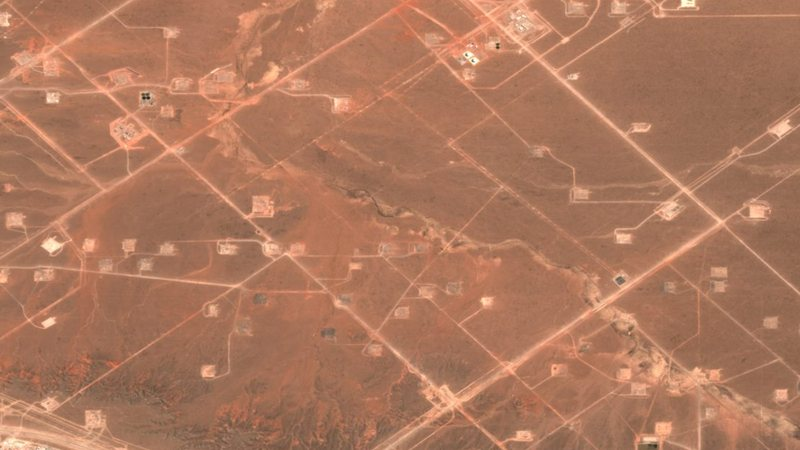
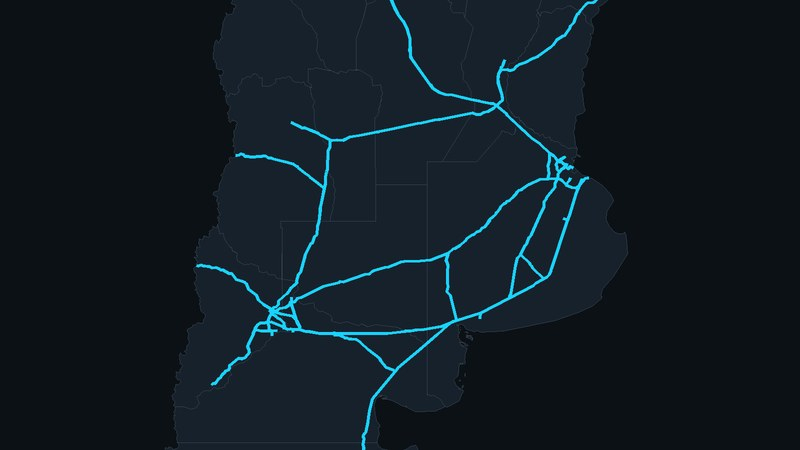
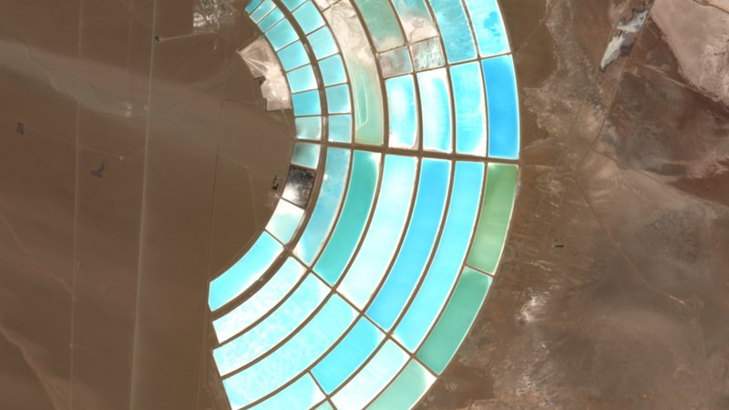

Tres tableros que se actualizan con cada dato nuevo. Elegí por dónde entrar.

PetróleoMapa · Demanda · Finanzas · Zonas

GasInvierno · Red · Producción

MineríaÍndice · Proyectos · Mapa · Finanzas
De dónde sale. Imágenes Copernicus Sentinel-1 y Sentinel-2, Secretaría de Energía, ENARGAS, INDEC y Secretaría de Minería. Cómo se hizo: locaciones-lab y gas-lab. Contacto: Diego Piñero.